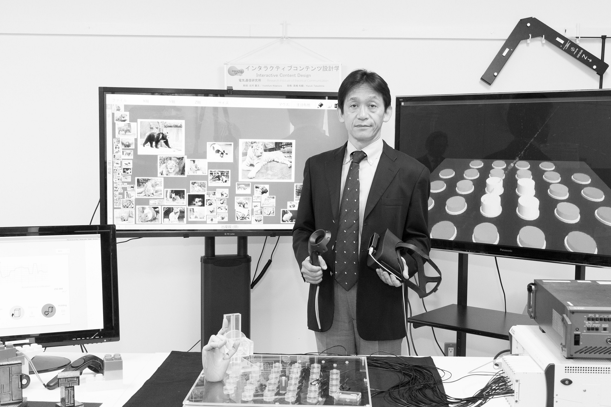
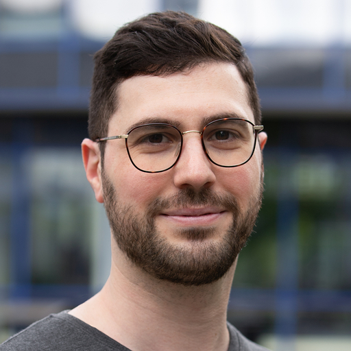
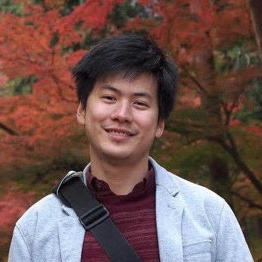
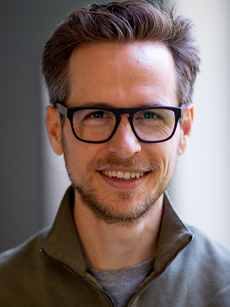
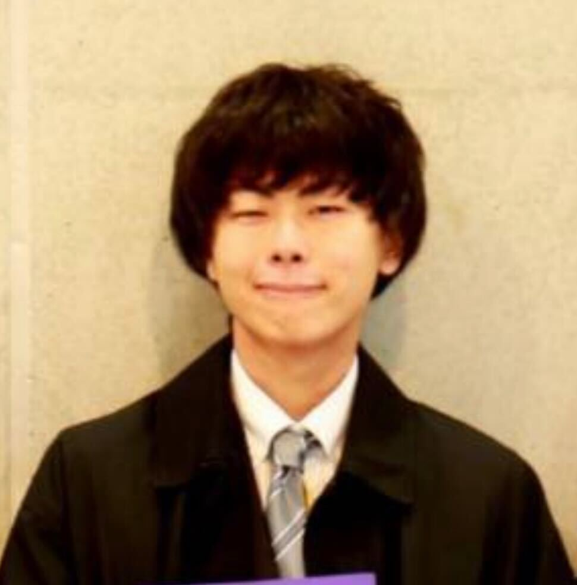
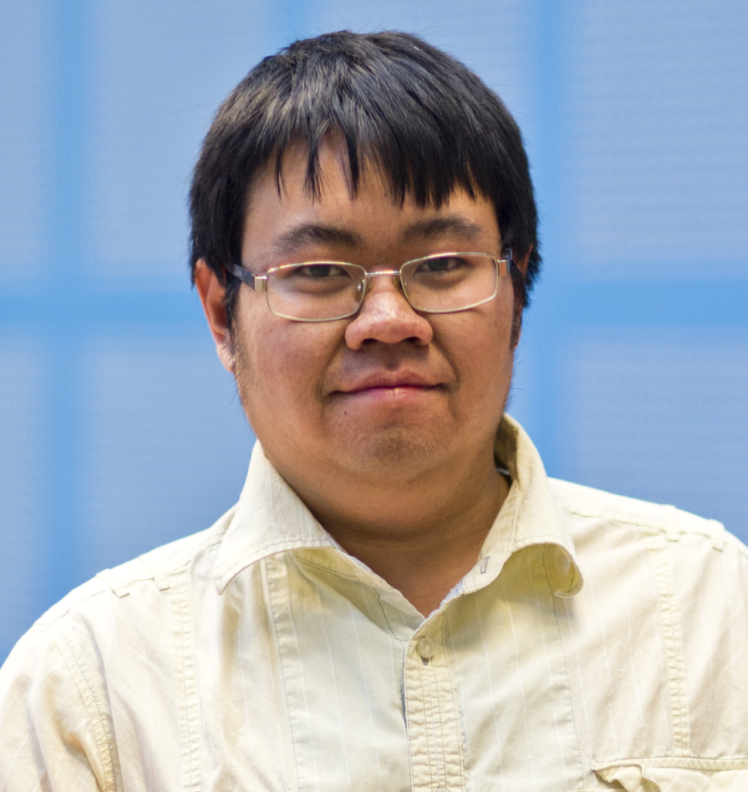
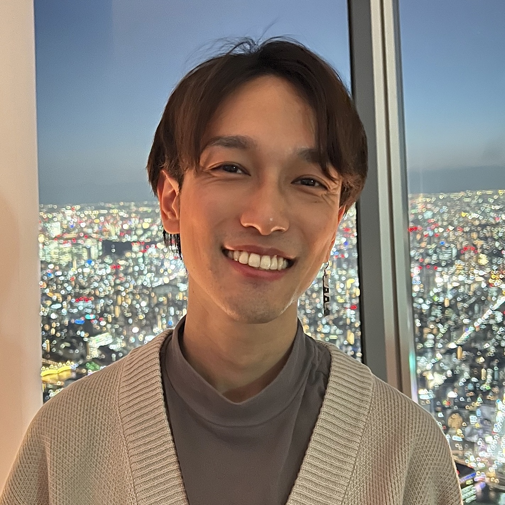

The workshop themed Cyber-physical Technologies for Affective Wellbeing will take place on October 27th and 28th, 2023 in Nara, Japan.
Goal
The workshop will provide an opportunity for young researchers to exchange their research progress and brainstorm about possible research directions to develop hardware and software that:
Bridges the real and the virtual worlds (a target of Society 5.0) by improving the quality of human-human and human-agent communication through behavioral and physiological cues.
Draws on quantitative measures to assess affective states, which are related to healthcare and well-being ( SDG #3
).
Significance
Achieving a state of well-being is essential, and one of the United Nations SDGs. Physical and mental well-being are essential, together with a sense of fulfillment with one’s influence in the world. Part of this influence is social and achieved through communication. Augmenting communication through technologies is one of the goals of Society 5.0 proposed by the 5th Science and Technology Basic Plan. To enhance communication and create technologies that help us to understand and improve well-being, a multidisciplinary team is necessary.
This workshop will provide a medium to encourage exchange between engineering, computer science, and psychology researchers working on:
Virtual avatar design and development
Non-verbal behavior analysis and synthesis
Speech analysis and synthesis
Facial expression understanding, recognition, and synthesis
Multimodal sensory analysis and Representation in virtual reality
Machine learning for human information processing
Emotion research
Affective computing
Natural language processing
Physiological-based human-computer interaction
Keynote

Dr. Yoshifumi Kitamura, is Deputy Director and Professor at Research Institute of Electrical Communication, Tohoku University. From 2023, he also serves as Director of the Interdisciplinary ICT Research Center for Cyber and Real Spaces
. His research interests include interactive content design, human computer interactions,3D user interfaces, virtual reality, and related fields. He is active in academic and professional communities, and serves in positions such as Japan Liaison for IFIP TC-13, the Liaison for Japan and Chair of ACM SIGCHI Asian Development Committee (2015-2021), Chair of Japan ACM SIGCHI Chapter (2016-2021), Steering Committee Chair of ACM VRST, SIGGRAPH Asia 2015 Conference Chair, and ACM CHI 2021 General Chair.
Talk title: Nonverbal Information to Enrich Future Telecommunication ― Challenges utilizing both Cyber and Real Space
The exchange of “nonverbal information,” which plays an important role
in everyday interpersonal communication, is also essential for
enriching telecommunications. Telecommunication systems that utilize
cyberspace, such as the Metaverse, which has been attracting attention
recently, are expected to be used more widely in the future, but there
are many issues to be overcome in order to realize rich communication
there. In this talk, the role of non-verbal information will be
reviewed, and the future of rich telecommunication through appropriate
transmission and reception of such information will be discussed.
Speed dating (1:1 conversations shifting every 5 minutes)
18:00
Moving to social event
19:00+
Social event
Day 2 - October 28
08:30
Breakfast
09:00
On-site demos by the attendants
11:00
Walk and free discussion
12:00
Lunch
13:00
Open questions brainstorming
13:30
Break
13:45
Whiteboard session in breakout groups
15:00
Results sharing with group presentations
15:45
Collective report writing
16:45
Funding brainstorming
17:45
Wrap up
18:00
Dinner
Participants
Abdallah El Ali
Dr. Abdallah El Ali is a research scientist in Human Computer Interaction at Centrum Wiskunde & Informatica (CWI) in Amsterdam. He leads the research area on Affective Interactive Systems, where he combines advances in Human-Computer Interaction, eXtended Reality, and Artificial Intelligence to measure, infer, and augment human cognitive, affective, and social interactions. He is also on the executive board for CHI Nederland (CHI NL), the Dutch ACM SIGCHI Local Chapter. Personal website.
Talk title: Affective Augmentation Systems for Mind, Body, and Social Connection
Alexander Marquardt

Dr. Alexander Marquardt is a postdoctoral researcher at the Institute for Visual Computing, Department of Computer Science, Bonn-Rhein-Sieg University of Applied Sciences (BRSU), Germany.
Talk title: Towards Awe and Beyond: The Role of Multisensory Cues in Affective Wellbeing
Jacqueline Bailey
Dr. Jacqueline Bailey is an Associate Lecturer in HCI and HCC at the University of Newcastle, Australia. She obtained a PhD in Information Technology and Bachelor of Information Technology with First Class Honours from the University of Newcastle. She works in partnership with the i3Lab mainly with avatars and agents in Simulation Training and Serious Games. Her research focuses on the quantitative analysis of human perceptions of avatars, and in particular, the use of the human startle reflex as a measure of affective processing. Previously, she worked collaboratively with the Australian Defence College Simulation Centre to evaluate how emotional expressions in avatars’ of differing levels of realism and fidelity are perceived by human users.
Talk title: The i3Lab: Industry linked research
Katsutoshi Masai
Dr. Katsutoshi Masai received the Ph.D. degree from Keio University, Japan, in 2018, He worked as a JSPS Research Fellow (DC2), a Project Research Associate, a Research Associate at Keio University, Research Associate at Japanese company, He is currently Assistant Professor at Kyushu University. His research interest includes wearable interfaces for sensing human daily activities.
Talk title: Smart eyewear for facial expression recognition and interaction
Kevin El Haddad
Dr. Kevin El Haddad is a researcher at the ISIA Lab of University of Mons in Belgium where he works on human-agent interaction applications in general with specific focus on industrial applications and nonverbal expression processing. At the same time, he leads the R&D department at Diabolocom (Paris, France).
Kongmeng Liew

Dr. Kongmeng Liew is a cultural psychologist, and lecturer (assistant professor) in psychology of social media and emerging online technologies at the University of Canterbury in New Zealand. His research uses computational methods to examine social psychological topics, focusing on issues like cultural marginalisation, cultural differences in affect and emotion, and the emergence of online culture.
Talk title: Groovin’to the cultural beat: Preferences for danceable music represent cultural affordances for high-arousal negative emotions
Mayra Barrera
Dr. Mayra Donaji Barrera Machuca is an assistant professor at the Faculty of Computer Science, Dalhousie University. She leads the VERTEX lab, which works on understanding people’s thinking when working inside a 3D virtual environment and 3DUI design. Her current areas of interest are 3D sketching in VR, skills transfer between VR and Real Life, and depth and spatial perception in VR. Personal website.
Talk title: New Multimodal sensory inputs for 3D Sketching
Melissa Steininger
Melissa Steininger is a research assistant at the Institute for Visual Computing, Department of Computer Science, Bonn-Rhein-Sieg University of Applied Sciences (BRSU), Germany. She recently completed my Master’s degree in Visual Computing at BRSU and will soon start her PhD. She has been working at the BRSU for three years, where she supported research on improving interaction in AR, created immersive environments and integrated biosignal measurements into experiments. Her interest lies in the combination of purpose-driven causes, such as promoting well-being as well as enhancing intercultural understanding.
Talk title: Affective responses in immersive technologies
Miao Cheng
Dr. Miao Cheng is an assistant professor at the Research Institute of Electrical Communication of Tohoku University (Sendai, Japan).
Michael Knierim

Dr. Michael Knierim is a post-doctoral researcher in the Karlsruhe Institute of Technology (KIT), in Germany - in a region they like to call the LÄND. He has a study background in business and economics and has ventured into industrial engineering and computer science during his PhD. His research focuses on creating knowledge and technologies that improve productivity and well-being in everyday work life. Specifically, He is currently researching the potentials of (1) EEG headphone sensors, and (2) how various sensors can be used to detect and support the so-called flow experience.
Talk title: Open-source hardware for multimodal biosignal collection from headphones
Monica Perusquia-Hernandez
Dr. Monica Perusquia-Hernandez is an assistant professor at the Nara Institute of Science and Technology (NAIST), in Japan. She is interested in affective computing, bio-signal processing, and interoceptive awareness enhancement using cyber-physical systems. In particular, she works with Computer Vision, Electromyography, Electroencephalography, Electrocardiography, and Skin Conductance for congruence estimation between facial expressions and emotions when assessing subjective user experience, time perception, and affective awareness.
Talk title: Embodied correlates of subjective experiences
Naoya Zushi

Naoya Zushi is a a graduate student in the Doctoral Program in Neuroscience, University of Tsukuba, and Research Fellowship for Young Scientists, JSPS. His background is in psychology, and his research interest is the relationship between emotion and perception.
Talk title: Influence of emotional state on taste perception
Nilay Yalcin
Dr. Nilay Yalcin is an Assistant Professor at Simon Fraser University with a background in Cognitive Science, AI and HCI. Her research focuses on modeling socio-emotional behaviors in computational systems in order to develop interactive systems that can understand human behavior and advance our understanding of human cognition by providing us means to evaluate our assumptions in a systematic and controlled environment. She has been tackling on complex concepts such as empathy, affect, personality and theory of mind in a variety of contexts such as healthcare, education and creativity. She plans to continue pursuing research to understand factors shaping people’s behaviors with their growing personal interactions with virtual agents and develop innovations that would have a positive effect on our society. She is also a proud member of Women in CS and Women in ML groups, and an advocate of Open Science and Open-Source Software.
Talk title: Towards Empathy: Bridging Affective and Cognitive Processes
Panote Siriaraya

Dr. Panote Siriaraya is an assistant professor at Kyoto Institute of Technology. His field is mainly in HCI, particularly in relation to mental well-being, though lately, he has been doing more work in machine learning and recommender systems. His previous research has been about designing VR systems to help people with dementia, creating gamifications of various cognitive training and cognitive behavioral therapies to make them more engaging, and lately, developing virtual worlds for people who are visually impaired.
Talk title: Games and VR technology in healthcare
Scinob Kuroki
Dr. Scinob Kuroki is a senior research scientist at NTT Communication Science Laboratories (Tokyo, Japan).
Personal website.
Shigeo Yoshida
Dr. Shigeo Yoshida is an HCI researcher / interaction designer. He is currently working at OMRON SINIC X Corporation as a senior researcher in Japan. He received his Ph.D. in Information Studies, master’s degree in Arts and Sciences, and bachelor’s degree in Engineering from The University of Tokyo in 2017, 2014, and 2012 respectively. During 2017-2022, he was mainly working at The University of Tokyo ( Cyber Interface Laboratory and Information Somatics Laboratory). His research interest involves a broad area of Human-Computer Interaction. He has been especially focusing on designing interactions based on the mechanisms of perception and cognition of our body.
Personal website.
Talk title: Designing Emotional Experiences using Computationally Generated Bodily Expressions
Taku Hachisu
Dr. Taku Hachisu received a Ph.D. in engineering from the University of Electro-Communications, Japan 2015. He is an assistant professor at the University of Tsukuba, Japan. He was a visiting student at INRIA in Rennes, France, an internship fellow at Microsoft Research in Beijing, China, and a visiting scholar at the University of California, Santa Barbara. His research interests include augmented/virtual reality, haptics, human–computer interactions, and wearable devices.
Talk title: EnhancedTouch: Wearable Devices for Augmenting Interpersonal Touch Interactions
Yoshiko Yabe
Dr. Yoshiko Yabe is a researcher at the Department of Functional Brain Imaging, National Institutes for Quantum and Radiological Science and Technology (QST) in Chiba, Japan. She started her academic career as a Ph.D. student at the University of Tokyo, Japan. She was working on the effect of body movement (treadmill walk) on visual motion perception. The relationship between body movements and perception/cognition has been one of my key research topics. Afterward, she became an assistant professor at Kochi University of Technology, where she became interested in another long-term research topic: time. During her second postdoc at Western University in Canada, she focused on how action changes timing perception via the striatal dopaminergic system. With her experience in cognitive neuroscience of the relationship between body movement and perception, she investigated cognitive capabilities to remember spatial and temporal information in athletes at NTT Communication Science Laboratories.
Talk title: Time perspective and well-being
Yung-Hao Yang
Dr. Yung-Hao Yang is a researcher affiliated with a specific program in Kyoto University’s Graduate School of Informatics. He attained the Ph.D. degree from the Department of Psychology at National Taiwan University, with a focus on unconscious visual perception, particularly related to aspects like high-level semantics and emotions, by using a range of research methods such as psychophysical techniques, fMRI, ERP, and Eye-tracking systems.
Following his doctoral studies, he undertook the role of a research fellow at Harvard Medical School’s Visual Attention Lab, where he captivated the nature of human attention when exposed to unconventional stimuli, such as instances of instability. Additionally, he collaboratied with a Japanese company, where he conducted research into the effects of auditory information on pupil dilation. Currently, his research is centered on the perception of human motion within naturalistic scenes.
Talk title: Perception of human motion within naturalistic scenes
Yutaro Hirao

Dr. Yutaro Hirao (平尾悠太朗) is Assistant Professor at Nara Institute of Science and Technology (NAIST), Japan (23-). His main research interests include virtual reality (VR), cross-modal interaction, and haptic perception (pseudo-haptics). He received his B.S. and M.S. in engineering from Waseda University (18-20) in Japan, and his Ph.D. in information science and technology form the University of Tokyo (20-23).
Talk title: Pseudo-haptics that endeavors to modify haptic perception by using visual and/or audio stimuli
Wan-Jou (Lavender) She
Dr. Wan-Jou (Lavender) She is an assistant professor at the Social Computing Lab of the Nara Institute of Science and Technology in Japan. Her background is in HCI, and she has primarily focused on areas related to grief care and mental well-being in the past. Lately, she has been diving into research on medical chatbots and LLM-related studies. LinkedIn
Talk title: How can we use AI technologies to promote resilience?